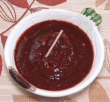

|
Caribe SauceUSA, New Mexico | ||||
| Makes: Effort: Sched: DoAhead: |
2 cups ** 1 hr Yes |
A moderately hot sauce popular in New Mexico, often as a marinade for meats. "Chili Caribe" means "Crushed Chili", so a Caribe Sauce is by nature a bit coarse and rustic. | |||
|
1-1/2 4 1 3 1/2 |
c cl T c t |
Chili New Mex (1) Garlic Oregano, Mex (2) Water Salt |
Make - (1 hr - 20 min work)
|